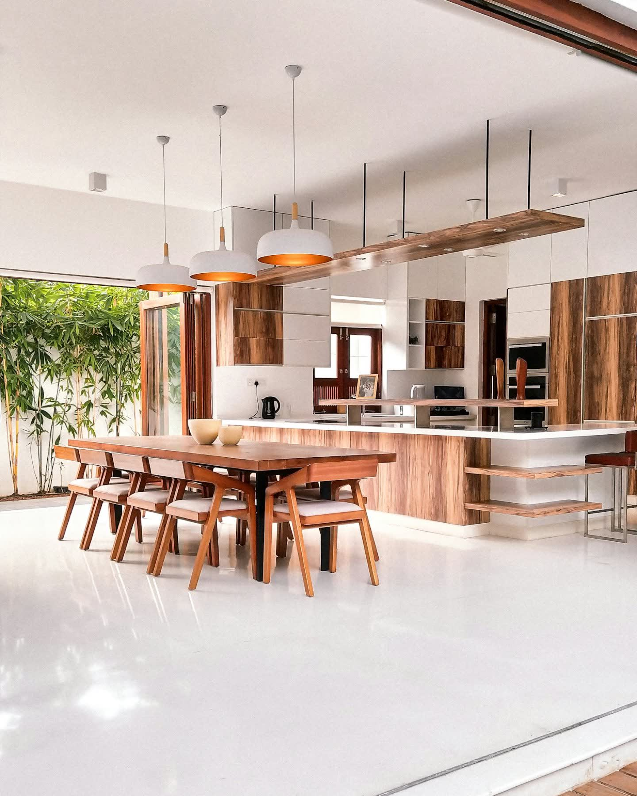
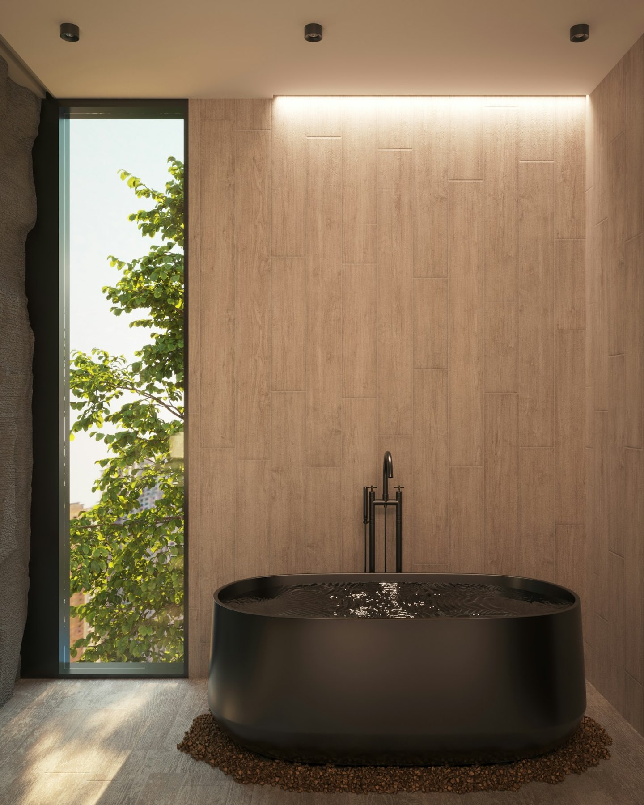

02Jayanagar · 38 m² · ten weeks · finished 2024
The long table
A kitchen for a family that cooks for twelve on Sundays. East light at breakfast, cut into bars by oak blinds, and a table long enough to forget the time at.

- Floor
- 38 m²
- On site
- Ten weeks
- All in, before GST
- ₹14.6 L
The brief
“On Sundays there are twelve of us and one stove. I want to cook facing them, not facing a wall.”Ritwik, standing where the island now is
The light
The bill
| What | Cost |
|---|---|
| Kitchen joineryCarcasses and fronts in smoked walnut, soft-close | ₹5.4 L |
| Worktops and splashbackHoned Kota stone, 4.8 m run | ₹1.6 L |
| The table3.2 m, solid teak, made in Channapatna | ₹1.9 L |
| Ten chairsCane seats, oiled frames | ₹1.5 L |
| LightingThree pendants, under-shelf strips, dimmers | ₹1.0 L |
| Oak blinds50 mm slats, two windows | ₹0.6 L |
| LimewashThree coats, 74 m² of wall | ₹0.6 L |
| Plumbing and electricsPoints moved as drawn | ₹0.6 L |
| Goods and work | ₹13.2 L |
| Design fee, ten per cent | ₹1.4 L |
| All in, before GST | ₹14.6 L |
Limewash N-12, Kiln clay
- Strip, plumb, wire
Weeks 1 and 2
- Joinery on site
Weeks 2 to 7
- Stone
Weeks 7 and 8
- Limewash
Week 9
- Table, chairs, style
Weeks 9 and 10
Pinned up

